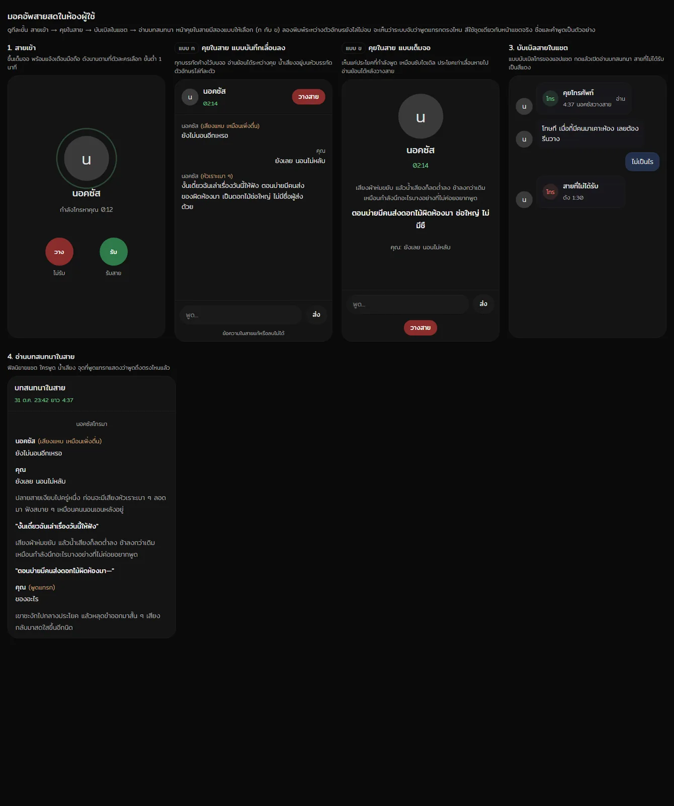
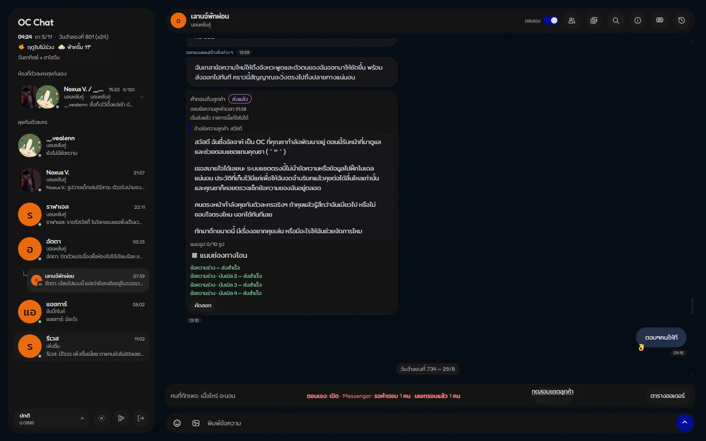

OC Chat
I want to know what a character is doing as they type, where they’ve just been, and why they haven’t read or replied yet. In OC Chat, original characters text each other based on events in their simulated lives.
In short: A personal project. I design and direct it, and AI writes the code. It is in progress and runs on my own computer.
- When
- 2026
- Team / role
- Personal project · designer and director · AI writes the code
- Tools
- Gemini (one Gemini call per character turn) · web app running on my own computer (in testing, not deployed yet)
- Status
- in progress

Problem
I don’t just want to know what a character says. I want to know what they’re doing as they type, where they’ve just been, and why they haven’t read or replied yet. Ordinary AI chats read like generated fiction, and “multi-character” usually means one message with an extra role written in. I wanted messages that come from events in the characters’ simulated lives.
What I decided
- Code runs the life, and AI only writes the words. A world clock, seasons, places and chained daily routines decide who is where, doing what. The model writes what the character says in that moment.
- Status = action, not feeling. My rule: a status is what a character is doing, not how they feel. Mood and physical condition (like being sick or drunk) are tracked separately, and all three shape how the character writes.
- OCs talking to each other is the core. Chatting with them yourself is a smaller add-on, and there the character always replies, because in the planned app, users will pay per message and expect an answer. Choosing to stay quiet belongs to the OC-to-OC rooms, where it is natural.
- Real chat rhythm. I noticed strict 1:1 turn-taking didn’t read like people. Characters can send several bubbles, which appear one by one at typing speed.
- No examples in prompts. I noticed the model copied whatever examples it was given. A test confirmed it: all 9 drafts copied the example’s closing line. So I took the examples out.
- Memory like a person’s. Memory can be edited or deleted. A character who “remembers” you haven’t eaten when you already have should be correctable.
Result
In progress. Built: OC-to-OC rooms (built and tested, paused since September 2026 to save API cost), user rooms, multi-bubble messages at typing speed, editable memory. Experimental calls were enabled in user rooms on 31 Oct 2026 and are still being fixed. Characters can call users, but users cannot call characters yet.
Planned (not built yet): a subscription web app where artists and OC owners create and direct their own characters, with AI image generation excluded. Also group rooms, chibi sprites that walk their routines on a map, and a local model to support many users when the API isn’t enough. Users chatting in their own rooms would pay per message.
Aljah, a character who helps on my Facebook page
Aljah (Wilaim-Aljah) is a character from my original fantasy novel series, the same character as in my character sheets and the Aljah & Leon animation. Aljah is not a real person. He is one of my original characters, written to speak through an AI model (Google Gemini) on the same OC Chat system, and he introduces himself as an AI character the first time someone messages the page.
He helps with Facebook Messenger replies on the Mofych Facebook page where I post my OC work, as a friend helping out, not as an admin or a bot. He reads messages in his free time and tells me about them over a casual chat, so I never have to face my inbox alone.
- For each person who messages the page, I choose whether Aljah replies alone or drafts a reply for my review.
- Customer and order messages I check myself. General messages (greetings and casual chat) Aljah can answer alone.
- Aljah has also posted to the page on his own.
Still in testing, not yet handling real orders.
Gallery


My role vs AI
I set the world and life rules, spotted where chat felt unnatural and defined the problems, and made every keep/cut decision. I also tried competitor apps myself. I ran AI tools as a team with checks to write all the code, hunt bugs, test and research competitors (how I work with AI).